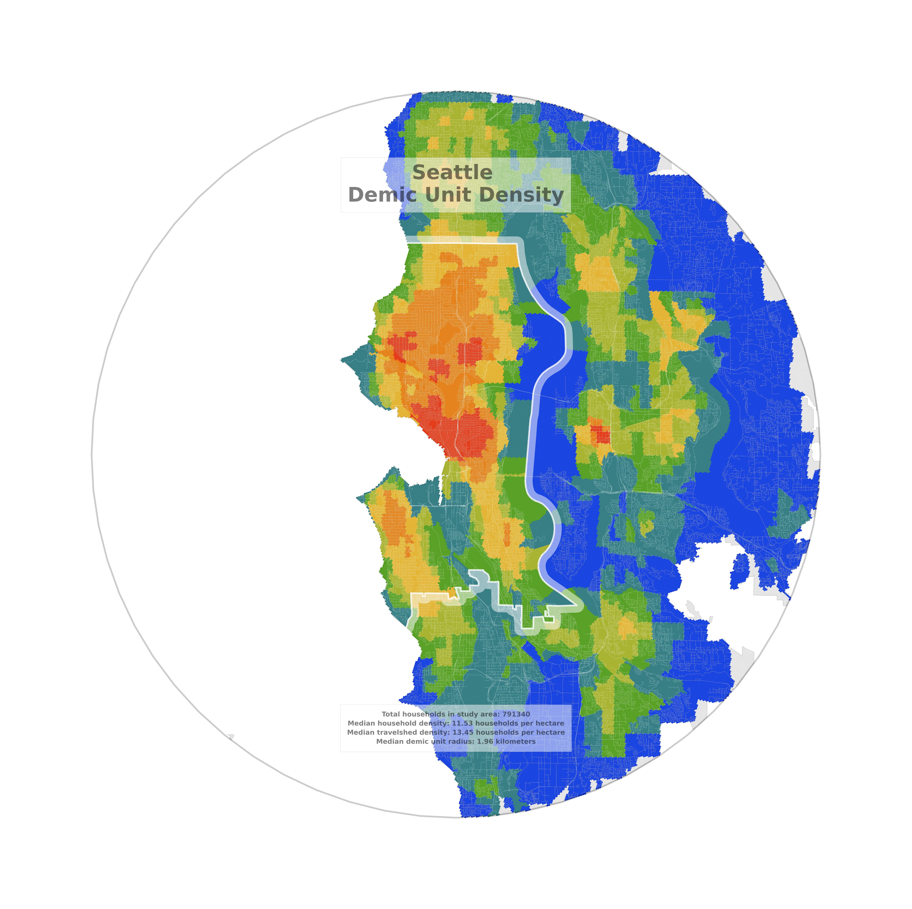

Deriving Composite Density
Overview
This page explains and plots the metrics used to calculate the composite density metric proposed in my Perceptual Density Project, using data from the city of Seattle, Washington. Composite density (Figure 4) is a hybrid metric of urban density, intended as a proxy for perceived neighborhood density, that directly incorporates the following measures:
• Gross density (Figure 1) is the number of households in a block group divided by the block group’s land area.
• Travelshed density (Figure 2) is the average gross density of all block groups whose centroids are located within a given radius of a block group’s centroid, intended as a proxy for neighborhood density within a given travel distance.
• Demic unit radius (Figure 3) is the smallest radius containing the centroids of the block groups containing the nearest set of a given number of households to a block group’s centroid, intended as a proxy for the catchment areas of neighborhood institutions of a given scale.
Figure 1: Seattle Gross Density

To derive composite density, we start with gross density, or the density of households per land area for each of the block groups in the study area. This plot displays the gross household density distribution for each of the block groups analyzed in the Seattle test case, with the red zones corresponding to the block groups with the highest densities and the blue zones corresponding to the block groups with the lowest densities. Note that each color contains approximately the same proportion of the study area’s households; hence, the total area of the red zones is much smaller than the total area of the blue zones.
Figure 2: Seattle Travelshed Density

Using gross density in conjunction with other user-defined parameters, we can derive two more values for each of the block groups in the study area. One of these two values is a travelshed density value, which the program calculates by taking the household-weighted average of the gross household density of all block groups whose centroids fall within a user-defined travelshed radius of each block group’s centroid. This plot displays the travelshed density distribution for the Seattle test case, with the red zones again corresponding to the block groups with the highest densities and the blue zones again corresponding to the block groups with the lowest densities.
Figure 3: Seattle Demic Unit Radius
The other of these values is a demic unit radius value, which the program calculates by iteratively summing the households from the block group’s nearest block groups until the number of households in a user-defined demic unit is reached. The radius is equal to the distance between the block group’s centroid and the centroid of its tipping-point block group, or the block group whose addition to the demic unit pushes the total sum of households over the user-defined demic unit threshold. This plot displays the demic unit radius distribution for the Seattle test case, with the red zones corresponding to the block groups with the smallest radii (correlating with high densities) and the blue zones corresponding to the block groups with the largest radii (correlating with low densities).
Figure 4: Seattle Composite Density

Once we have calculated all three of the values plotted above, we can combine them into a composite density metric that takes each of the values into account. The composite density value is calculated for each urban block group using the household-weighted percentiles of the block group’s gross density, travelshed density, and demic unit radius values, relative to all of the urban block groups in the study area, with each of those component metrics weighted according to the user’s preference. This plot displays the composite density distribution for the Seattle test case; as before, the red areas correspond to the block groups with the highest densities and the blue areas correspond to the block groups with the lowest densities.